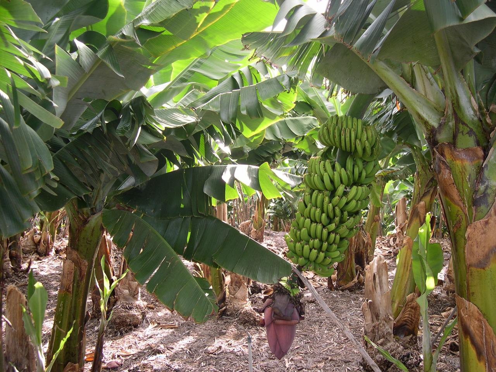
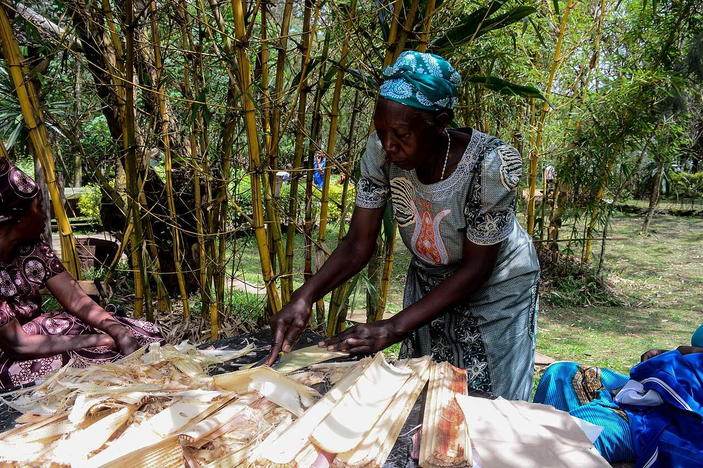
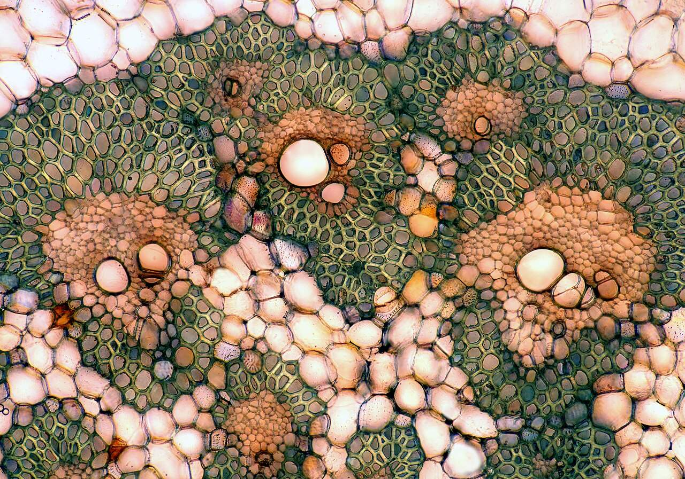
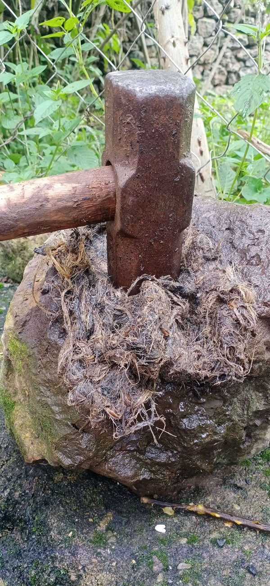
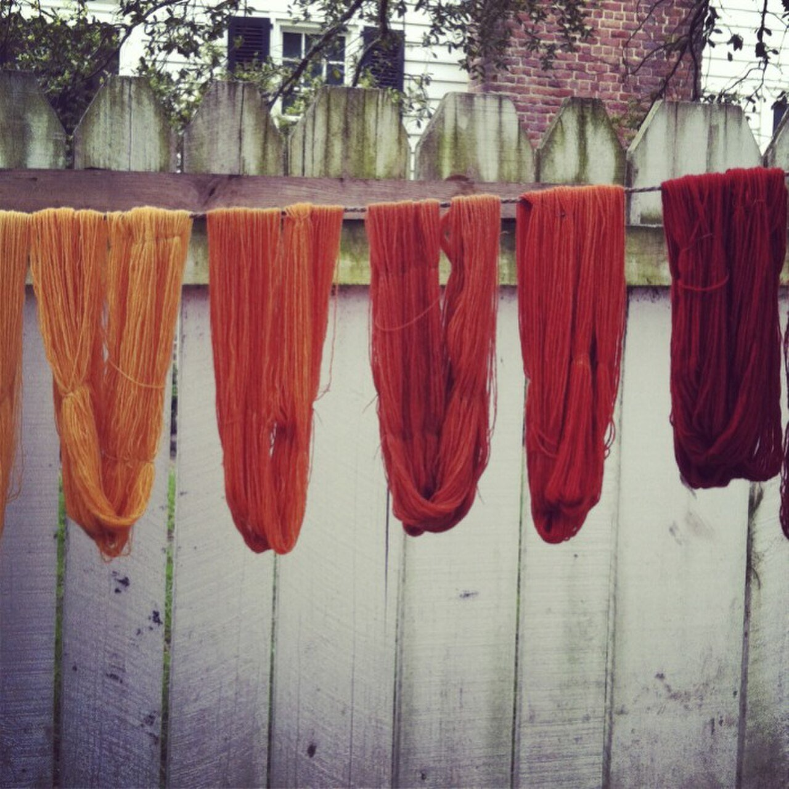

展廳二
綠色的重生——山蕉資材的變身術
一株香蕉一生只結一次果。採收之後，比果實重好幾倍的假莖常被砍倒留在田裡。如果它們不是垃圾，而是一種材料呢？
數字看假莖
假莖產量是果實的三倍以上
假莖可抽出的纖維比例，殘渣還能做成可分解果袋
臺灣香蕉收穫面積（公頃），每年都有大量假莖
變身五步驟
點數字或按「下一步」，看假莖怎麼變成纖維與工藝品。
第 1 步：採收後的假莖
香蕉一株只結一次果。採收之後，比果實重好幾倍的假莖常被砍倒留在田裡。

Luc Viatour / https://Lucnix.be，CC BY-SA 3.0
第 2 步：剝片與抽絲
把假莖一層層剝開，刮除果肉組織，取出裡面的纖維。

【授權待確認】使用前請查 Commons 檔案頁
第 3 步：顯微鏡下的纖維
切開香蕉莖放到顯微鏡下，可以看到一束束「維管束」，那就是纖維的來源。它們輸送水分和養分，也撐起高大的香蕉株。

Misiek1962，CC BY 4.0
第 4 步：晾乾與整理
纖維洗淨、曬乾，再捶打或梳理，變成可以捻成線的材料。

【授權待確認】使用前請查 Commons 檔案頁
第 5 步：織布與工藝
捻成線後織成蕉布，或做成杯墊、燈具等工藝品。集集的蕉織環創坊就有香蕉絲杯墊和蕉絲燈。
請放上組員在蕉織環創坊或集元果拍攝的作品照片。
集集的蕉織工藝
蕉織環創坊
位於集集鎮民生東路 70 號，前身為集集山蕉歷史文化館。作品包括以香蕉絲製作的杯墊，以及搭配綠色隧道樟樹枝製作的蕉絲燈。
集元果觀光工廠
2016 年後由山蕉歷史文化館轉型，展示約 110 種香蕉品種，並提供傳統假莖抽絲體驗。週三公休、DIY 需預約，出發前請再確認。
延伸：噶瑪蘭族的香蕉絲織布
香蕉絲織布也是噶瑪蘭族的傳統技藝，嚴玉英女士於 2021 年登錄為保存者。2026 年 4 月，臺灣首座香蕉假莖自動化抽絲示範場也正式啟用。

植物染：探索中的可能
蕉布可以用植物染料上色。集集有哪些在地植物可以入染？染出來會是什麼顏色？

職人故事
請訪問蕉織環創坊或集元果的工作人員，寫一段 150 字左右的職人故事：他怎麼開始做蕉織？最難的步驟是什麼？附上自己拍的「職人的手」照片（拍攝前先徵求同意）。